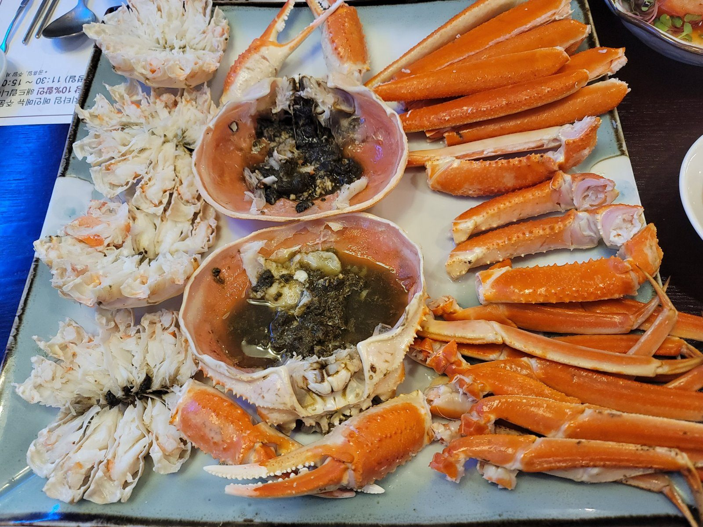

Winter in Korea is cold, dry and bright. Skies are often clear, cities glitter with lights, ski slopes open in the mountains and hot street food appears on every corner. It is also quieter and often cheaper than spring and autumn. If you pack properly, December to February can be one of the most enjoyable times to visit. We cover it month by month in our December, January and February guides. Here is what to expect and how to make the most of it.
How cold does it get?
Seoul is colder than many visitors expect. From December to February, temperatures are often below freezing, especially at night and in January, and cold waves from the north can bring several days of much harsher cold. The wind makes it feel colder still. Gangwon Province, where the ski resorts are, is colder again. The south coast, Busan and Jeju are milder, though Jeju is windy.
Snow falls a few times each winter in Seoul and more often in the mountains, but the air is mostly dry and sunny. Days are short: in December it gets dark around half past five in the afternoon, so plan outdoor sightseeing for the middle of the day.
What to pack
- A proper winter coat. Koreans swear by long, padded coats that reach below the knee; you will see them everywhere.
- Thermal layers under your clothes, so you can take a layer off indoors, where heating is strong.
- Gloves, a hat and a scarf, and warm socks and shoes with good grip for icy pavements.
- Lip balm and moisturiser. The air is very dry, outdoors and in heated rooms.
- Hand warmers are sold cheaply in every convenience store; slip one into a pocket.
Tick it all off with our interactive packing list.
See our seasons and packing guide for the rest of the year.
The best things to do in winter
Ski and snowboard
Korea's ski season runs roughly from December to early March, with resorts within an easy day trip of Seoul. Shuttle buses from the city and English-speaking rental counters make it simple for beginners. See our ski resort guide.
Winter festivals
Gangwon Province holds ice festivals in January, the best known being the Hwacheon Sancheoneo Ice Festival, where visitors fish through holes in a frozen river and have the catch grilled on the spot. Pyeongchang has a trout festival around the same time. Dates are announced in the autumn and depend on the ice, so check the official festival website before you book. Our winter festivals guide covers the main ones and how to get there.
Christmas and New Year lights
From late November, Seoul's department stores, shopping streets and squares are covered in lights, and New Year's Eve ends with the bell ringing at Bosingak. See Christmas and New Year in Seoul.
Warm up the Korean way
- Street food: hotteok (sweet filled pancakes), bungeoppang (fish-shaped buns with red bean), roasted sweet potatoes and fish cakes in hot broth. See our street food guide.
- Hot, spicy stews and Korean barbecue in restaurants with heated floors.
- A bathhouse or jjimjilbang, the most Korean way to thaw out. See our bathhouse guide.
Palaces in the snow
If you are lucky enough to wake up to snow in Seoul, head to Gyeongbokgung or Changdeokgung early, before the paths are cleared. Snow on the curved palace roofs is one of the city's most beautiful sights.
Jeju in winter
Jeju is milder than the mainland, with camellias in bloom and tangerines in season. Hallasan is often covered in snow, and winter hikes there need proper gear. See our Jeju in winter guide and 3-day Jeju itinerary.
Eat winter seafood on the east coast
Winter and early spring are snow crab season on the east coast. Towns such as Yeongdeok and Uljin, and harbour markets up and down the coast, serve it steamed, with the rich "crab butter" in the shell mixed into fried rice at the end. Prices change with the season and the catch, so check before you order.

Things to watch out for
- Seollal (Lunar New Year): in 2027 the holiday runs from 6 to 9 February. Trains and buses sell out and some shops close. See our Seollal guide.
- Ice: pavements, steps and hill paths can be icy, especially in the shade. Walk carefully.
- Mountain trails may be closed or require crampons after snow.
- Fine dust: some winter days are hazy. Check an air quality app.
- Flights to Jeju can be delayed by wind and snow; keep plans flexible.
- Theme parks: outdoor rides can close in wind and snow; see Lotte World or Everland for an indoor option.
FAQ
Is winter a good time to visit Korea?
Yes, if you like crisp, clear weather. It is quieter than spring and autumn, with skiing, festivals, lights and warming food, but you need warm clothes.
Does it snow in Seoul?
It snows a few times most winters, usually lightly. The mountains of Gangwon Province get far more snow.
What should I wear in Korea in winter?
A warm, padded coat, thermal layers, gloves, a hat and shoes with good grip. Indoors is well heated, so wear layers you can take off.